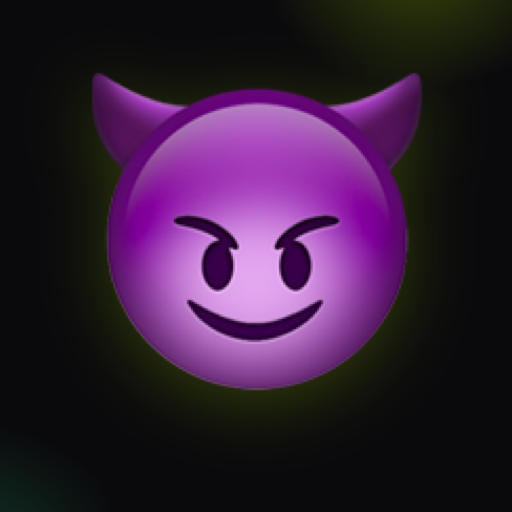
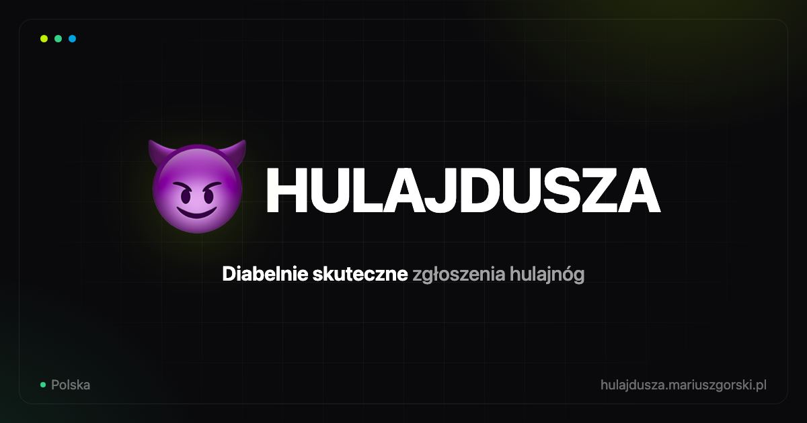

Narzędzie obywatelskie / miejskie — zgłaszanie źle zaparkowanych hulajnóg wspólnego użytku bezpośrednio do operatorów (Bolt, Lime, Dott i inni).
Mieszkańcy miast zirytowani chodnikiem zablokowanym przez hulajnogę — chcą to zgłosić w kilkanaście sekund, bez zakładania konta.
Zero tarcia: zdjęcie, kod QR, wysłane. Ton lekko przewrotny — nazwa i maskotka diabełka przełamują urzędowość tematu porządku miejskiego.
Znak marki to lockup emoji 😈 + wordmark Hulajdusza (Inter, 800, tracking‑tight). Emoji jest natywne systemowo — nie zamieniamy go na rysowaną ikonę poza kontekstem faviconu/OG, gdzie potrzebna jest spójna renderowana wersja.
Wokół lockupu zachowaj margines równy wysokości emoji (1×). W nawigacji aplikacji znak renderowany jest przy 16px tekstu — poniżej 24px całkowitej wysokości używaj samego znaku, bez wordmarku.
Dwa równoległe systemy: neutralny motyw produktu (jasny/ciemny, sterowany tokenami) do UI aplikacji oraz ciemna paleta z akcentem neonowym do materiałów marketingowych (OG image, ikony, prezentacje).
Produkt sam w sobie jest celowo monochromatyczny (czerń/biel) — akcenty lime/green/blue oraz zielony „live dot” (#22c55e) i laser skanowania QR to sygnały stanu, nie część palety brandowej, i nie powinny rozlewać się poza swoje komponenty.
Jeden krój na cały system: Inter. Nagłówki ciężkie i ścieśnione (tracking‑tight), treść regularna, dane liczbowe/kod w JetBrains Mono.
Jeden master (512×512) skalowany w dół do każdego kontekstu. Pliki źródłowe w resources/brandkit/, wyeksportowane do public/.


Bezpośredni, lekko przewrotny, zero korporacyjnego żargonu. Zdania krótkie, czasowniki w trybie rozkazującym przy wezwaniach do działania.
Unikamy nazw miast w komunikacji ogólnej (nagłówki, OG) — produkt działa w wielu miastach; nazwę miasta pokazujemy tylko tam, gdzie dane są faktycznie przefiltrowane (np. statystyki po wyborze miasta).
| Plik | Rola |
|---|---|
| resources/brandkit/og-image.html | Źródło renderowanego OG image (1200×630) |
| resources/brandkit/icon.html | Źródło mastera ikony (512×512) |
| resources/brandkit/icon-512.png | Wyrenderowany master ikony |
| public/og-image.png | OG/Twitter image — wspólny dla wszystkich podstron |
| public/favicon.svg | Favicon wektorowy (nowoczesne przeglądarki) |
| public/favicon.ico | Favicon wielorozdzielczy (16/32/48/64) |
| public/favicon-16x16.png · favicon-32x32.png | Favicon PNG fallback |
| public/apple-touch-icon.png | Ikona iOS (180×180) |
| public/android-chrome-192x192.png · 512x512.png | Ikony Android / PWA |
| public/site.webmanifest | Manifest PWA (nazwa, kolory, ikony) |
| public/style.css | Tokeny koloru i komponenty UI produktu |